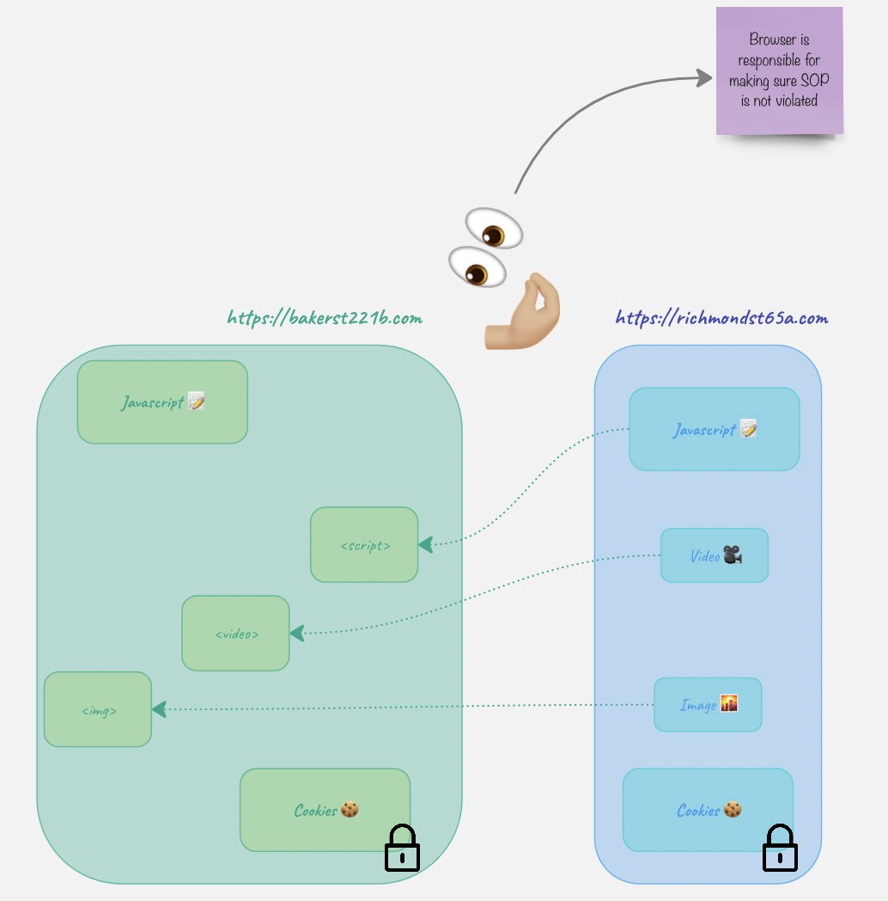

This is about … .
SOP vs CORS
SOP
Basically, SOP says “You can’t manipulate resources belonging to other websites, you must remain here at all times. Play with your toys only”. It is some sort of a sandbox.
Let’s have a look at an example. Let’s take two websites: bakerst221b.com and richmond65a.com. The javascript on bakerst221b.com wants to have access to something on richmond65a.com. What does it have access to and what does it not have access to?
- Cookies 🍪 -> NO!!! Cookies are like temp keys. While temporary, these are still keys which can be used to open doors. Once the door is open, all sorts of nasty stuff can happen and we don’t want that. That’s the whole point why SOP was created in the first place. ❗️For the usability purposes, cookies can be accessed by other subdomains although it might pose some risks. In order to partially mitigate it, use
HttpOnlyflag when creating a cookie. - Videos 🎥.
- Pictures 🌇.
- Another script 📝.

Ok. The website https://bakerst221b.com can have videos, pictires and sctipts from the richmond website loaded on its page.

But what’s interesting, it still can’t ACCESS them.

Relax, SOP…
- Cookies can be accessed by subdomains (unless
HttpOnlyis set) document.domainis set to the same domain to show the browser it’s ok, but only if both are parts of the same FQDN.- CORS.
CORS
What fun would it be if the rules didn’t have some exceptions? CORS is basically as way to circumvent overly strict SOP and allow something to be accessed cross-origin.
When seeing some cross-origin request, user’s browser first sends a preflight request to check if it’s allowed to do so. And here is the biggest trick. There are simple and “complex” requests. When something happens WITHOUT javascript (html only), the requests generated are ALWAYS simple. That means that without javascript code one CAN’T make a non-simple request. What do I call non-simple? Let’s start with what’s simple first.
- Methods:
GET,HEADandPOST - Headers: no custom headers (including those starting with
X-) - Content type:
application/x-www-form-urlencoded,multipart/form-data, ortext/plain.
Note that ALL of the requierements above need to be satisfied. Non-simple are basically everything else. The reason why simple requests do not require a preflights is because they relatively safe. Since you can’t set headers, change content-type or use other methods from plain html, and the request is constructed automatically by the browser, it’s relatively safe. You might ask if cookies are sent this way.
The most important header is Access-Control-Allow-Origin, it says which origins can make the cross-origin requests. Another header to be mindful is Access-Control-Allow-Credentials, when set to true.
Here is an example of the request:
OPTIONS /api/resource HTTP/1.1
Host: example-server.com
Origin: https://example-client.com
Access-Control-Request-Method: PUT
Access-Control-Request-Headers: X-Auth-Token
In the response, the server will tell the broser what’s allowed and what’s not:
HTTP/1.1 200 OK
Access-Control-Allow-Origin: https://example-client.com
Access-Control-Allow-Methods: PUT, POST, GET, OPTIONS
Access-Control-Allow-Headers: X-Auth-Token
Access-Control-Max-Age: 86400
Say, I have a website bakerst22b_evil.com. On my website there is a link to richmond64.com. When the user clicks the link, it doesn’t initiate CORS. However, this is a cross origin request. If richmond64.com has a CSRF there, it might be exploited. CORS won’t protect from that.
Another scenario. On my website bakerst22b_evil.com there is a javascript code that want’s to access a richmond64.com cookie 🍪. It won’t be able to because the user’s browser won’t allow it. The only way that bakerst22b_evil.com could access it, is if richmond64.com set its CORS header to the following:
Access-Control-Allow-Origin: * # or
Access-Control-Allow-Origin: bakerst22b_evil.com # or
Access-Control-Allow-Credentials: true
Suppose we have a page on https://bakerst221b_evil.com, and there is a link like https://richmond.com/admin/add?name=evil&password=master (richmond.com is vulnerable to CSRF). What happens is that the browser will open this page with the credentials belonging to Richmond, and if there is a valid session, the action above will be executed.
How does a CSRF token protect against CSRF? Remember that a request is considered simple only when all conditions are met (GET/POST/HEAD and no custom headers and content type is a form or text). But what is a CSRF token? It’s a random value passed in a custom header (something like X-CSRF-token). Now, if the server requires this custom header to be present, one cannot use just HTML to craft a request. Clicking on a link like https://richmond.com/admin/add?name=evil&password=master will not result in a request with a custom header since it’s CUSTOM, and the browser only sends what is NOT custom, but rather what’s usual. Now, the attacking script on https://bakerst221b_evil.com would have to embed JavaScript to add a custom header, something like the following:
const xhr = new XMLHttpRequest();
const url = 'https://richmond64.com/api/data';
xhr.open('GET', url, true);
// Add a custom header
xhr.setRequestHeader('X-Custom-Header', 'my-custom-value');
xhr.onreadystatechange = function () {
if (xhr.readyState === 4 && xhr.status === 200) {
const responseData = JSON.parse(xhr.responseText);
console.log(responseData);
}
};
xhr.send();
But that poses two problems:
- How does it “guess” the value of the token? The attacker can hope that there is some vulnerability in the token generation or validation.
- Once the custom header is sent, the request ceases to be a simple one and preflight is sent first. And if there are no misconfigurations associated with the CORS policy, or no CORS policy is set up at all, the request will NOT be sent.
❗️ Of course, there are other mechanisms that need to be leveraged to protect from CSRF, since CORS is not a CSRF mitigation!
HSTS
Strict-Transport-Security header is sent forcing the browser only use HTTPS and preventing any requests coming via HTTP.
Certificate Transparency (CT)
CA issues certificates and maintains a log with all the certificates issued. This log is available online and helps:
- Detect misissued certificates, which may be a result of CA compromise or misconfiguration.
- Identify rogue CAs that are issuing certificates without proper authorization.
- Increase the overall trust in the SSL/TLS ecosystem by providing transparency and accountability.
References
Expand…
Portswigger SOP article
https://portswigger.net/web-security/cors/same-origin-policy